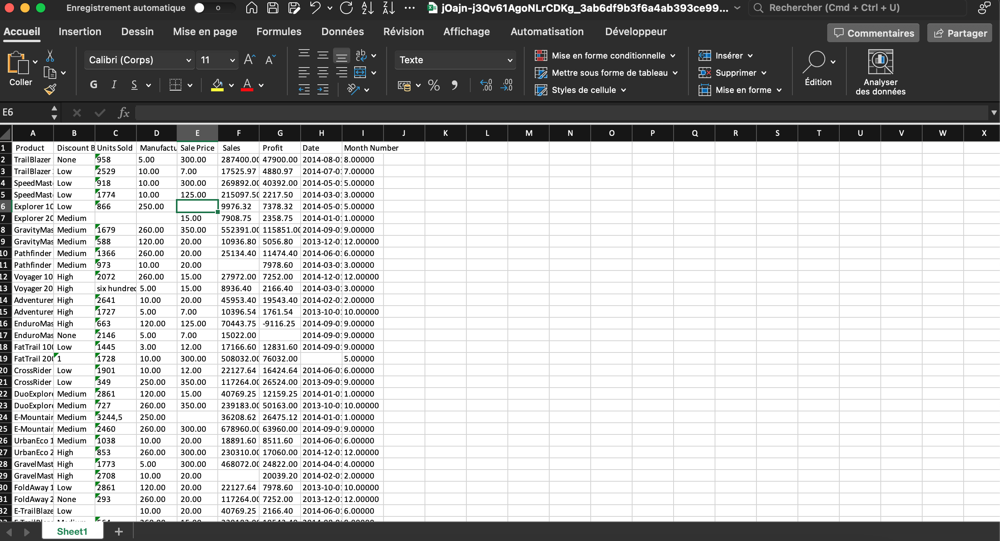
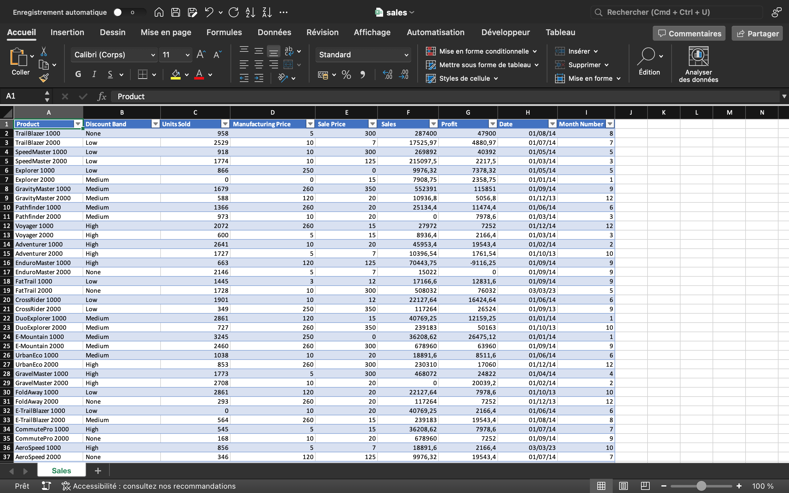
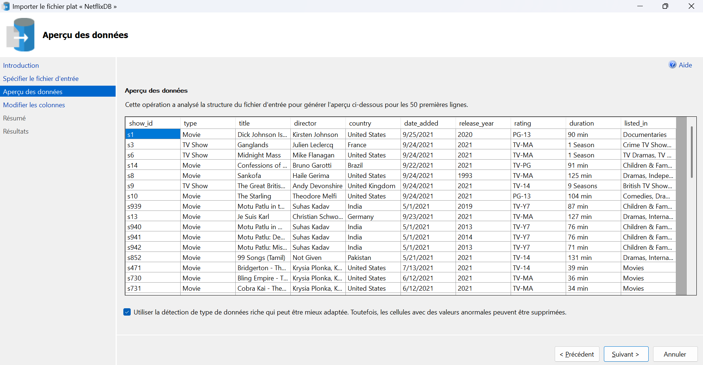
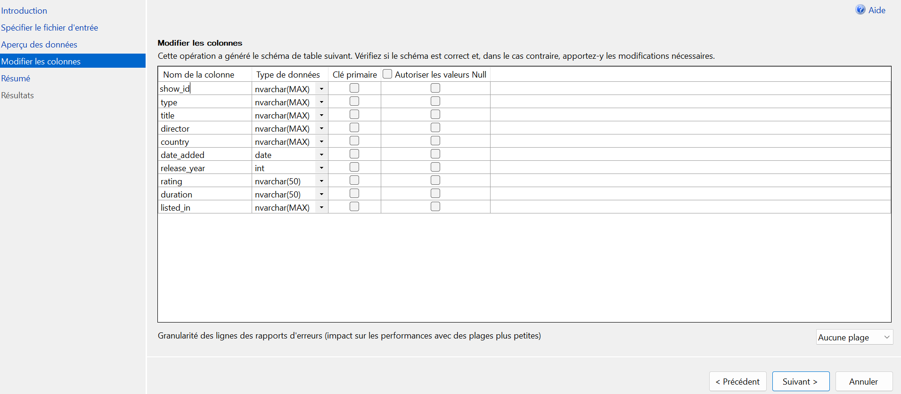
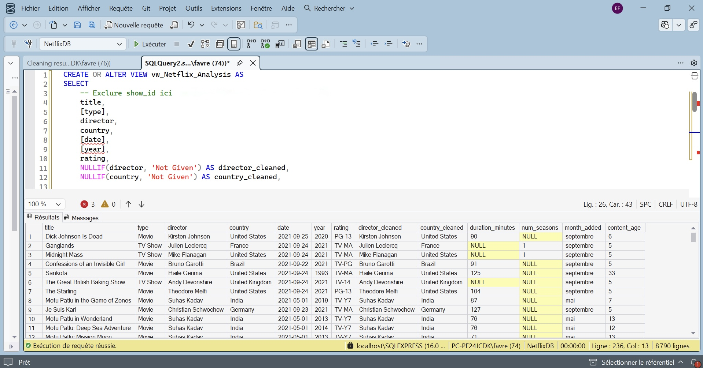
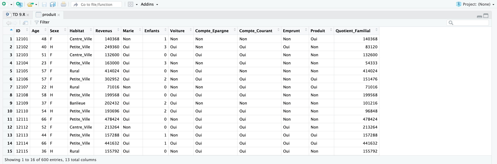
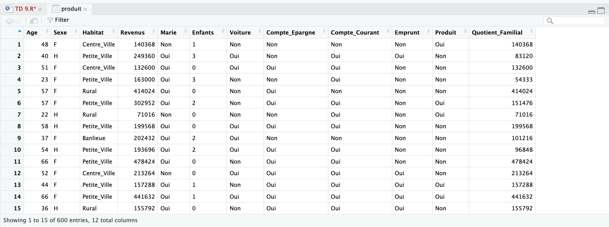

Le nettoyage de données
Le nettoyage de données est l'étape la plus cruciale de tout projet analytique. Il consiste à détecter, corriger ou supprimer les données incorrectes, corrompues, mal formatées, en double ou incomplètes au sein d'un jeu de données. Des données propres garantissent la précision des modèles prédictifs et la fiabilité des décisions business.
1. Microsoft Excel
Dataset ‘Sales’
Dans cet exemple, je suis partie d’un fichier de données de ventes brut présentant plusieurs incohérences de formatage et de saisie. L’objectif était de rendre cette base de données fiable afin de la rendre exploitable pour une analyse précise des performances commerciales.
Dès l'ouverture du fichier, j'ai constaté que les données étaient configurées selon des standards américains (points au lieu de virgules, formats de date erronés), ce qui empêchait Excel de traiter correctement les montants et les périodes. J'ai donc d'abord procédé à une harmonisation globale des formats régionaux pour garantir la justesse des futurs calculs.
J’ai procédé ensuite au nettoyage des données : j’ai d’abord remplacé les cellules vides par des valeurs par défaut (notamment 0 pour les unités vendues) afin d'éviter toute erreur de calcul ; puis, j’ai harmonisé les entrées textuelles incohérentes (comme le remplacement de "six hundred" par 600) et supprimé les enregistrements contenant des erreurs techniques ou des doublons, afin d'assurer l'unicité de chaque ligne ; enfin, j’ai ajusté manuellement la structure du tableau (largeurs de colonnes, mise en forme des en-têtes) et appliqué des formats de nombres personnalisés pour que les données restent lisibles, en affichant les décimales uniquement lorsque c'est nécessaire.


2. SQL (SQL Server Management Studio)
Netflix
Pour ce projet, j’ai analysé un jeu de données extrait de Kaggle recensant le catalogue Netflix (8 790 entrées). Ce dataset offre une vision complète de l'évolution de la plateforme, avec des contenus allant des classiques de 1925 aux productions récentes de 2021.
Il permet d’étudier une grande diversité de programmes (films et séries) provenant du monde entier et couvrant de multiples genres, tels que les drames, les documentaires, l'action ou encore les thrillers.
Dictionnaire des variables :
- Type : Catégorisation du contenu (Film ou Série).
- Title : Titre de l'œuvre.
- Director/Creator : Nom du réalisateur (film) ou du créateur (série).
- Country : Pays de production.
- Release Date : Date officielle d'ajout au catalogue Netflix.
- Release Year : Année de sortie initiale.
- Rating : Classification par âge (ex: TV-MA, PG-13, R...), indiquant l'adéquation du contenu selon le public.
- Duration : Durée du contenu (en minutes pour les films, en nombre de saisons pour les séries).
- Genres : Catégories thématiques permettant une segmentation précise du catalogue.

L'objectif était de préparer ces données pour une analyse exploratoire approfondie afin de mieux comprendre l'évolution du contenu proposé par la plateforme.
Dans un premier temps, j'ai analysé la structure des colonnes pour vérifier la cohérence des types de données et identifier les anomalies. J’ai vérifié l'unicité de la clé primaire (show_id) pour m'assurer de l'absence de doublons, puis j'ai vérifié la présence de valeurs manquantes sur l'ensemble du dataset pour m'assurer de la qualité du jeu de données.

J’ai ensuite procédé à un nettoyage approfondi pour normaliser le dataset. D’abord, j'ai renommé les colonnes pour les rendre plus explicites (date, category, year), et j'ai converti les mentions "Not Given" en NULL, ce qui permet d'exclure proprement ces valeurs lors de mes calculs statistiques. Puis, pour isoler ma logique de transformation et préserver l'intégrité de la table source, j'ai encapsulé ces étapes dans une vue dédiée. Cela m'a d’ailleurs permis de convertir les durées en données numériques (en distinguant les minutes des saisons) et de calculer des KPIs pertinents, comme l'âge du contenu.
Enfin, pour faciliter l'analyse par genre, j'ai crée une seconde vue en utilisant la fonction STRING_SPLIT avec CROSS APPLY, ce qui m'a permis de transformer les entrées contenant plusieurs genres en lignes distinctes, rendant le dataset propre et prêt pour la visualisation.

3. R (RStudio)
Segmentation client
Pour ce dernier exemple, j'ai utilisé RStudio afin de procéder au nettoyage d’un jeu de données contenant les informations d'achat de 600 clients. L'objectif était d'identifier des profils homogènes (clusters) afin de dégager des caractéristiques communes comme l'âge ou le quotient familial.
Caractéristiques du dataset :
- 600 instances / 13 variables.
- Variables clés : Âge, Revenus, Quotient Familial, et variables socio-démographiques.
- Cible : Variable Produit (Oui/Non).
J’ai procédé à une préparation rigoureuse des données : j'ai d'abord supprimé la colonne ID via l'opérateur [,-1], celle-ci n'ayant aucune valeur statistique. Ensuite, j'ai converti la variable Enfants en facteur ordonné (ordered=TRUE) pour intégrer la hiérarchie logique des valeurs (0 < 1 < 2 < 3) dans les calculs de distance. Enfin, j'ai validé la structure et la distribution statistique du dataset via les fonctions str() et summary() avant de débuter l'analyse exploratoire.

